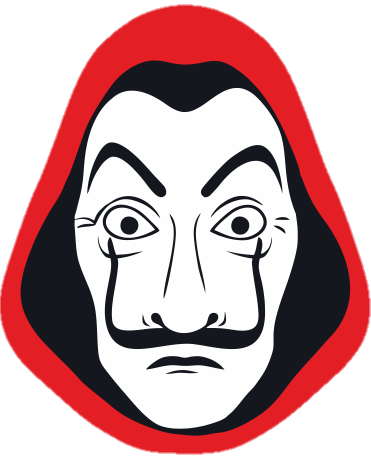

MISSÃO 01
Match Encontrado
ACESSANDO ARQUIVO CONFIDENCIAL
OPERAÇÃO:
ASSALTO PERFEITO
ACESSO AUTORIZADO

ARQUIVO DE ÁUDIO INTERCEPTADO
RELATÓRIO DE INTELIGÊNCIA 001
ALVO MASCULINO
Codinome: Vitor
Base de Operações: Florianópolis
Status: Capturado
ALVO FEMININO
Codinome: Verônica
Base de Operações: Gov. Celso Ramos
Status: Cúmplice Principal
Primeiro Contato: Servidores do Tinder
Status Inicial: Caso Arquivado (Excesso de Trabalho / Distância)
Resultado: Erro crítico do destino. Investigação reaberta.
REGISTROS: SERVIDOR TINDER
root@dossier:~# tail -f /var/log/tinder_match.log
> PROCESSANDO ALGORITMOS DE COMPATIBILIDADE...
> MATCH ENCONTRADO
> CONVERSA INICIADA (Protocolo de Aproximação Ativo)
> INSTAGRAM TROCADO (Acesso à Rede Secundária Concluído)
> ALERTA: Fator 'Excesso de Trabalho' Detectado.
> CONTATO ABORTADO.
> CLASSIFICAÇÃO ATUAL: CASO SEM CONCLUSÃO
MISSÃO: BALADA
📍 ALVO: UNDR
FASE 1: INFILTRAÇÃO
Amigos insistiram para que Vitor abandonasse o esconderijo. O caos da noite parecia o cenário ideal para camuflagem.
FASE 2: CONTATO VISUAL
Entre luzes e som, o tempo parou. Uma mulher altamente deslumbrante cruzou seu radar.
FASE 3: AVALIAÇÃO DE RISCO
"ALTO - Ela está acompanhada". A decisão lógica foi abortar a aproximação.
O PLOT TWIST
O que a inteligência e vasta experiência de Vitor não previu...
Ele não buscava o Alvo. Ele se tornou Alvo.
Em um movimento perfeitamente calculado, Verônica tomou a iniciativa e puxou-o para si.
O PRIMEIRO BEIJO.
ARQUIVOS DESCLASSIFICADOS
- O suposto "acompanhante" não era seu par.
- A existência da pré conexão estabelecida meses antes no Tinder.
O plano não havia falhado. Ele estava apenas aguardando o momento perfeito.
CRONOLOGIA DA OPERAÇÃO
MISSÃO 02
Instagram Trocado
Instagram Trocado
MISSÃO 03
Caso Prematuramente Arquivado
Caso Prematuramente Arquivado
MISSÃO 04
A Festa
A Festa
MISSÃO 05
Primeiro Beijo
Primeiro Beijo
MISSÃO 06
A Revelação do Plot
A Revelação do Plot
MISSÃO 07
Floripa ↔ Gov. Celso Ramos
Floripa ↔ Gov. Celso Ramos
MISSÃO 08
Primeiro de Muitos Encontros
Primeiro de Muitos Encontros
MISSÃO 09
La Casa de Papel - Nossa Primeira Série Concluída
La Casa de Papel - Nossa Primeira Série Concluída
MISSÃO 10
Próximas Temporadas...
Próximas Temporadas...
MURAL DE INVESTIGAÇÃO
ESTATÍSTICAS DA OPERAÇÃO
0Dias Juntos
0Horas Juntos
0Minutos Juntos
0Meses Juntos
0Segundos Vividos
IncalculávelKm Percorridos
DiversasSéries/Filmes
InfinitasRisadas
FILOSOFIA BERLIM
CONFIDENCIAL
"A vida não deve ser medida pelo tempo em que o coração bate seguro dentro do peito, mas sim pela intensidade com que ele resolve acelerar."
Amar exige coragem. Exige pular de olhos vendados em um plano que pode dar errado. Mas a beleza não está na segurança do cofre; está em viver o presente, criar memórias indeléveis e rir na cara do perigo.
A OPERAÇÃO DISTÂNCIA
Florianópolis
Gov. Celso Ramos
"Ela mora longe demais."
Antes era o principal obstáculo no planejamento tático...
"Agora faço esse caminho todos os dias sem pensar duas vezes."
A distância tornou-se apenas uma piada interna. Uma rota de fuga que leva exatamente para onde ambos sempre deveriam estar.
MISSÕES PENDENTES - PRÓXIMAS TEMPORADAS
- [ ] Planejar novas rotas e viagens não rastreáveis.
- [ ] Infiltrar-se em novas maratonas de filmes e séries.
- [ ] Executar o roubo de novas conquistas e metas conjuntas.
- [ ] Fabricar novas memórias inestimáveis.
- [ ] Sobreviver juntos a todas as novas aventuras.
COMUNICADO FINAL
O MAIOR ASSALTO DA HISTÓRIA CONTINUA EM ANDAMENTO
Elenco Principal:
Vitor & Verônica
Direção Tática:
O Professor
Roteiro Original:
O Destino
Tempo de operação ativa: